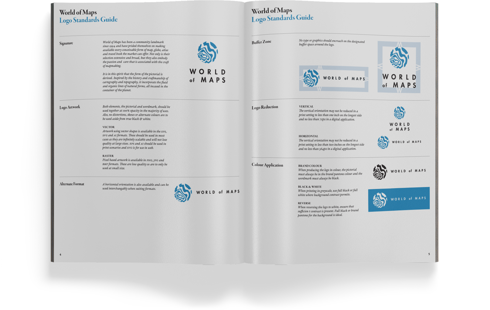
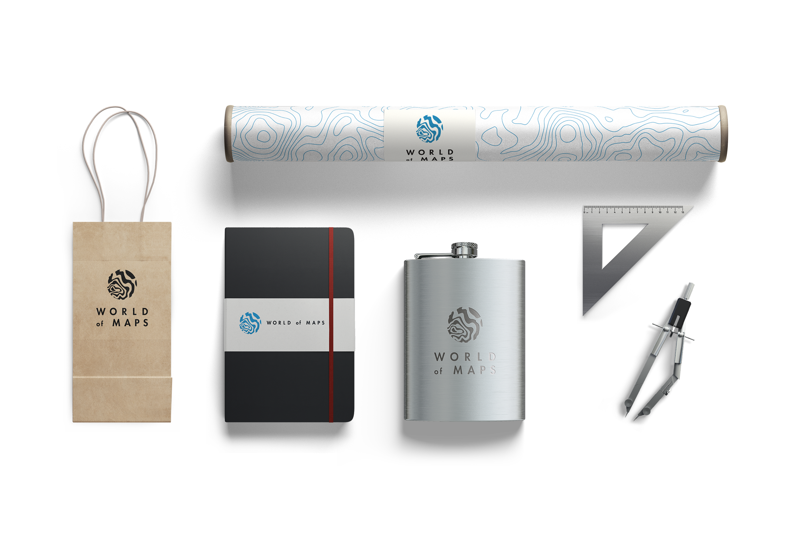

WORLD OF MAPS
Logo Standards Guide
Logo and logo standards guide for a local retailer that specializes in maps, flags, globes and travel related literature. Their customers are nostalgic, sentimental, and appreciate the value of fine crafting. This brand package was created in order to speak to these values using a clean, modern and sophisticated aesthetic.

Inside content
Business cards

Branding application mockup